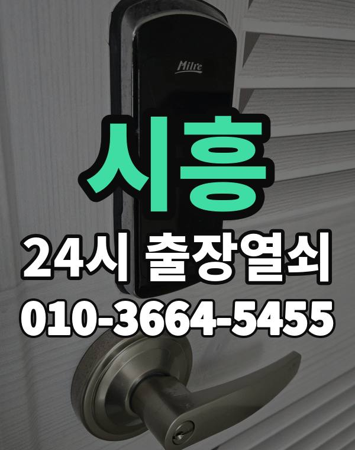

시흥은 이런 곳입니다
시흥은 배곧, 목감, 장현 새 아파트와 정왕동 원룸, 상가, 산업단지가 함께 있는 도시입니다.
정왕동은 원룸 건물이 많아 공동현관과 현관 도어락을 모두 확인합니다.

시흥시 출장 가는 동네
- 정왕동
- 배곧동
- 은행동
- 대야동
- 신천동
- 목감동
- 장곡동
- 능곡동
- 월곶동
정왕동 출장열쇠, 배곧동 열쇠집처럼 동네 이름으로 찾으셨어도 같은 곳입니다.
적혀 있지 않은 동네도 시흥시 안이면 다 갑니다.
시흥에서 맡기실 수 있는 일
시흥 출장, 이렇게 알려주세요
산업단지 사무실과 창고 출입문도 출동합니다.
배곧 쪽은 오피스텔 건물 출입 여부를 미리 알려주세요.
정왕역, 오이도역, 시흥시청역, 배곧 근처라고 말씀해 주셔도 위치 잡기가 쉬워집니다.
가까운 역이나 큰 건물, 단지 이름을 같이 알려주세요.
- 정확한 주소, 아파트라면 동과 호수
- 번호판 상태 (꺼짐, 켜짐, 경고음)
- 거주 확인용 신분증이나 주소 나온 우편물
전화부터 작업까지 순서는 이용안내에 적어 두었습니다.
시흥 출장열쇠 관련 글
- 시흥 배곧동 지문·카드 스마트 도어락 고르는 법과 교체 전 확인할 것
- 시흥 대야동 도어락 비밀번호를 잊었을 때 현관문 여는 방법과 출장열쇠
- 시흥 은행동 보조키가 안 열리거나 걸릴 때 현관문 여는 방법과 확인할 것
- 시흥 장곡동 도어락 건전지가 방전됐을 때 현관문 여는 방법과 예방법
- 시흥 정왕동 원룸·자취방 현관문 잠겼을 때 출장열쇠 부르는 순서
- 시흥 목감동 아이나 반려동물이 집 안에 있을 때 문이 잠기면 대처법
- 시흥 능곡동 현관문이 안 닫히거나 잠기지 않을 때 확인할 것과 출장열쇠
- 시흥 신천동 택배 받으러 나갔다 문이 잠겼을 때 출장열쇠 부르는 순서
- 시흥 월곶동 열쇠가 문 안에서 부러졌을 때 대처법과 출장열쇠 호출 순서
시흥 출장열쇠 자주 묻는 질문
시흥 어느 동네까지 오시나요?
정왕동, 배곧동, 은행동, 대야동, 신천동, 목감동 등 시흥시 전 지역 갑니다. 적혀 있지 않은 동네도 시흥시 안이면 출동합니다.
새벽에 시흥에서 전화해도 되나요?
밤이든 새벽이든 받습니다. 어디인지 들으면 언제쯤 도착하는지 바로 말씀드립니다.
개방에 실패해도 비용이 나오나요?
열지 못하면 비용은 없습니다. 작업 전에 금액을 듣고 정하시면 됩니다.
세입자도 문을 열어 주시나요?
거주하시는 분인지 확인한 뒤 엽니다. 신분증이 집 안에 있으면 관리사무소 확인도 됩니다.
시흥 도어락 수리나 교체도 하시나요?
네, 문 열기와 함께 도어락 수리, 설치, 교체도 합니다. 고쳐서 되면 교체는 권하지 않습니다.